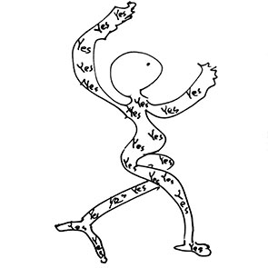

|
|
2000 Exhibition of Graphic Desi
Best:1024x768px" / copyright©Ya-Wen Fu and VG Bild Kunst, All rights reservered. All work is copyrighted, please contact me for reproduction in any format. We cannot assume any liability for the content of external pages. Solely the operators of those linked pages are responsible for their content.. |